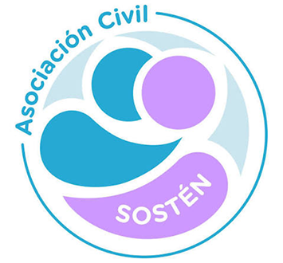

Es el acompañamiento nutricional durante todo el tratamiento, adaptado a las necesidades de cada persona.
Durante el tratamiento oncológico, comer lo suficiente puede volverse difícil. Los suplementos orales existen para acompañar ese proceso: se indican cuando la ingesta cae por debajo de lo que el cuerpo necesita y permiten sostener el estado nutricional sin reemplazar la alimentación habitual.
La nutrición oncológica va mucho más allá de una dieta general. Se adapta a cada etapa del tratamiento y a cada situación individual.
Las guías ESPEN recomiendan integrar la evaluación y el cuidado nutricional dentro de la atención oncológica.
